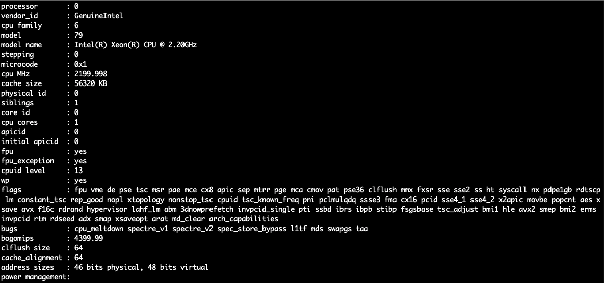

Ngrok 讓 localhost 可以被外部連線
Ngrok 開發測試 webhook 的利器
ngrok 做為一個轉發的伺服器，他可以把外界的請求轉發到你指定的 Port
使用的背景原理是連接到 ngrok 雲端伺服器將你本機指定的地址公開
再將由 ngrok 一串公開的網址來存取內容
他的優點是快速而且還提供了 https 的服務讓你使用上更安全，甚至你還可以設置密碼保護
官方文件與載點：https://ngrok.com/download
安裝
Mac
brew install ngrok
Linux
確認自己的主機硬體架構
cat /proc/cpuinfo

再去官網下載指定檔案依照官網安裝 或是直接使用 snap 安裝
sudo apt update
sudo apt install snapd
sudo snap install ngrok
使用
啟動並監聽 8080 Port
ngrok http 8080
就可以看到對外開放的網址

註冊 ngrok
不註冊的話過一段時間就會被斷線，開發階段使用免費版本就足夠了
Ngrok authtoken 頁面
複製 Authtoken 之後到 terminal 輸入
ngrok authtoken {Your Authtoken}
看到以下訊息代表認證完成
Authtoken saved to configuration file: /Users/user_name/.ngrok2/ngrok.yml